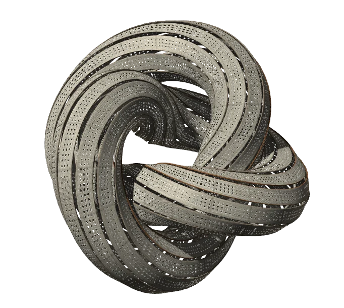

ESTUDIO PERSONAL / LIMA, PERÚ
Diego
Rivera.
Construyo. Pruebo. Aprendo.
QA automatizador en NTT DATA. Desarrollo software y exploro lo que viene: DevOps e inteligencia artificial.
SOFTWARECALIDADSISTEMAS

Un espacio para el trabajo y la curiosidad.DESLIZA PARA EXPLORAR
Me interesa entender los sistemas por dentro: cómo se construyen, cómo fallan y cómo hacerlos más confiables.
Trabajo en automatización de pruebas y desarrollo proyectos propios. Este es mi espacio para compartir lo que construyo y las decisiones que voy tomando en el camino.
AHORAQA y automatización
EN PRÁCTICADesarrollo de software
EXPLORANDODevOps e IA
02 / PROYECTOS PERSONALES
Ideas que toman forma.
Explorar
Parking Management
Web, móvil y API conectados para gestionar estacionamientos.
Next.js / Node.js / PostgreSQLExplorar
Support Ticket Manager
Del reporte a la resolución: un flujo de soporte con seguimiento.
Next.js / TypeScriptExplorar
Lima Real Estate Pipeline
Datos inmobiliarios, transformación y controles de calidad.
Python / PostgreSQL / Streamlit03 / SIGAMOS LA CONVERSACIÓN